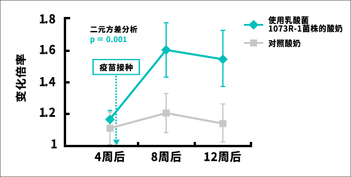

乳酸菌1073R-1株 实验结果(5)
结果暗示，摄取由乳酸菌1073R-1株制成的酸奶可能有助于老年人预防流感。
本实验是由神奈川齿科大学口腔科学讲座环境病理学 槻木惠一教授们的小组，在2014年10月-12月期间，通过安慰剂对照双盲实验并行群组间比较实验（※1），在神奈川县内的特别养护老人院2个设施实施。实验对象为96名在老年人设施居住的老年人。
实验对象中半数每天摄取由乳酸菌1073R-1株制成的酸奶，另半数每天摄取对照酸奶，每天1次100g，经12周每天摄取，比较这两组对甲（H3N2）亚型流感反应的唾液中IgA（※2）的推移。另外，两组在开始约5周后的11月上旬都接种了流感疫苗。
对流感甲（H3N2）亚型反应的唾液中IgA的增加（变化率）

结果表明，摄取由乳酸菌1073R-1株制成的酸奶人群组，与对照群组相比，对甲型H3N2病毒反应的IgA明显更多。也就是说，不仅仅是IgA增加了，还确认到增加的IgA有对抗流感病毒的能力。
- ※1以相同条件给予实验食品和对照食品的实验
不仅是实验对象，在现场组织实验的人也不知道给的食品是实验食品还是对照食品
（双盲实验），先入为主的观念不会影响实验结果。
- ※2免疫“抗体”中的一种
IgA（免疫球蛋白A、英：Immunoglobulin A）主要存在于口腔、鼻子、眼睛和消化道等的粘膜上，可防止病毒和细菌等异物的入侵。据认为腔内一天分泌50-100mg的IgA，可以说在口腔内工作的IgA在免疫力中所占的比例相当高。
| 对象 |
神奈川县内在特别养护老人院居住的老年人和老年人保健福利设施居住的老年人 |
| 人数 |
96名 |
| 量 |
由乳酸菌1073R-1株制成的酸奶群组： 100g 一次/天
对照酸奶群组：100ｇ 一次/天 |
| 为期 |
摄取12周 |
| 实验期 |
2014年10月～2014年12月 |